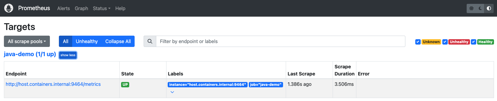
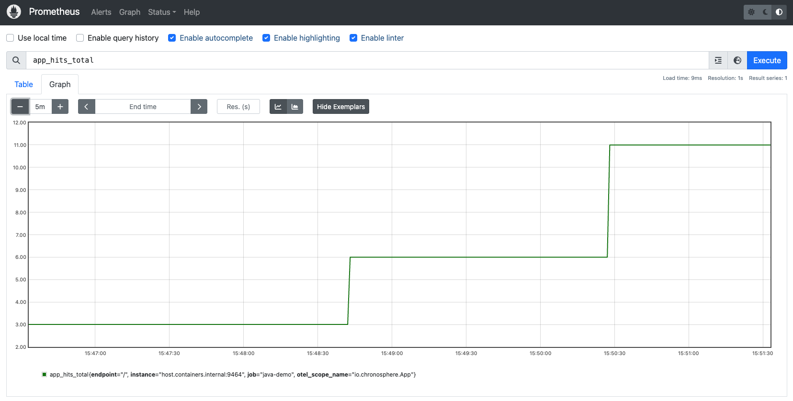

Lab 6 - Traces & Metrics
Lab Goal
This lab walks you through instrumenting metrics with OpenTelemetry and linking them to traces via exemplars using Prometheus.
Traces & Metrics - Choose your runtime
This lab adds Prometheus alongside the application. You can run both with Podman as shown on the
following slides, or deploy them together into a single pod on a local Rancher Desktop k3s
cluster instead:
- Continue onwards to run with Podman
- Continue to run using Kubernetes (k3s)
Traces & Metrics - What's an exemplar?
Exemplars are the way to connect traces to metrics, allowing you to jump from "hey what's that
weird spike?" on a metric chart directly to a trace associated with that context with one click!
Traces & Metrics - OpenTelemetry Metrics
OpenTelemetry provides a complete metrics API in Java:
- Counter - monotonically increasing value (e.g., requests count)
- UpDownCounter - value that can increase or decrease (e.g., active connections)
- Histogram - distribution of values (e.g., request duration)
- Gauge - current value at a point in time (e.g., temperature)
Traces & Metrics - Add dependencies
Add the OpenTelemetry metrics and Prometheus exporter dependencies to
pom.xml as follows:
<!-- OpenTelemetry Metrics SDK -->
<dependency>
<groupId>io.opentelemetry</groupId>
<artifactId>opentelemetry-sdk-metrics</artifactId>
<version>1.65.0</version>
</dependency>
<!-- Prometheus Exporter -->
<dependency>
<groupId>io.opentelemetry</groupId>
<artifactId>opentelemetry-exporter-prometheus</artifactId>
<version>1.65.0-alpha</version>
</dependency>
Traces & Metrics - Configure metrics
Update the OpenTelemetry initialization to include metrics with Prometheus exporter
(available for uncommenting in the
App.java file) as follows:
import io.opentelemetry.exporter.prometheus.PrometheusHttpServer;
import io.opentelemetry.sdk.metrics.SdkMeterProvider;
import io.opentelemetry.sdk.metrics.export.PeriodicMetricReader;
private static OpenTelemetry initOpenTelemetry() {
Resource resource = Resource.getDefault()
.merge(Resource.create(Attributes.of(
ServiceAttributes.SERVICE_NAME, "java-demo")));
// Configure Prometheus HTTP server on port 9464
SdkMeterProvider meterProvider = SdkMeterProvider.builder()
.setResource(resource)
.registerMetricReader(PrometheusHttpServer.builder()
.setPort(9464)
.build())
.build();
// ... tracer provider setup ...
return OpenTelemetrySdk.builder()
.setTracerProvider(tracerProvider)
.setMeterProvider(meterProvider)
.buildAndRegisterGlobal();
}
Traces & Metrics - Create a counter
Create a counter to track homepage views (available for uncommenting in the
App.java file) as follows:
import io.opentelemetry.api.metrics.LongCounter;
import io.opentelemetry.api.metrics.Meter;
public class App {
private static final OpenTelemetry openTelemetry = initOpenTelemetry();
private static final Tracer tracer = openTelemetry
.getTracer("io.chronosphere.App");
private static final Meter meter = openTelemetry
.getMeter("io.chronosphere.App");
private static final LongCounter hitsCounter = meter
.counterBuilder("app_hits_total")
.setDescription("Total number of homepage hits")
.setUnit("1")
.build();
}
Traces & Metrics - Increment the counter
Update the handleIndex method to increment the counter (available for uncommenting in the
App.java file) as follows:
import io.javalin.http.Context;
private static void handleIndex(Context ctx) {
int hits = HITS.incrementAndGet();
// Increment the counter with attributes
hitsCounter.add(1, Attributes.of(
AttributeKey.stringKey("endpoint"), "/"));
ctx.contentType("text/plain");
ctx.result("This webpage has been viewed " + hits + " times");
}
Traces & Metrics - Create a histogram
Create a histogram to track request duration (available for uncommenting in the
App.java file) as follows:
import io.opentelemetry.api.metrics.DoubleHistogram;
private static final DoubleHistogram requestDuration = meter
.histogramBuilder("http_request_duration_seconds")
.setDescription("HTTP request duration in seconds")
.setUnit("s")
.build();
// In your handler:
long startTime = System.nanoTime();
try {
// Handle request...
} finally {
double duration = (System.nanoTime() - startTime) / 1_000_000_000.0;
requestDuration.record(duration, Attributes.of(
AttributeKey.stringKey("endpoint"), "/doggo"));
}
Traces & Metrics - Verify metrics instrumentation
Build and run the metrics instrumented application as follows:
$ mvn clean install
$ java -jar target/java-instrumentation-demo-1.0-SNAPSHOT-with-dependencies.jar
Traces & Metrics - Verify metrics endpoint
Make some requests to the app endpoints:
Check for the metrics in the Prometheus metrics endpoint http://localhost:9464/metrics:
Check for the metrics in the Prometheus metrics endpoint http://localhost:9464/metrics:
# HELP app_hits_total Total number of homepage hits
# TYPE app_hits_total counter
app_hits_total{endpoint="/",otel_scope_name="io.chronosphere.App"} 4.0
# HELP http_request_duration_seconds HTTP request duration in seconds
# TYPE http_request_duration_seconds histogram
http_request_duration_seconds_bucket{endpoint="/doggo",otel_scope_name="io.chronosphere.App",le="0.0"} 0
http_request_duration_seconds_bucket{endpoint="/doggo",otel_scope_name="io.chronosphere.App",le="5.0"} 3
http_request_duration_seconds_bucket{endpoint="/doggo",otel_scope_name="io.chronosphere.App",le="10.0"} 3
http_request_duration_seconds_bucket{endpoint="/doggo",otel_scope_name="io.chronosphere.App",le="25.0"} 3
http_request_duration_seconds_bucket{endpoint="/doggo",otel_scope_name="io.chronosphere.App",le="50.0"} 3
http_request_duration_seconds_bucket{endpoint="/doggo",otel_scope_name="io.chronosphere.App",le="75.0"} 3
http_request_duration_seconds_bucket{endpoint="/doggo",otel_scope_name="io.chronosphere.App",le="100.0"} 3
http_request_duration_seconds_bucket{endpoint="/doggo",otel_scope_name="io.chronosphere.App",le="250.0"} 3
http_request_duration_seconds_bucket{endpoint="/doggo",otel_scope_name="io.chronosphere.App",le="500.0"} 3
http_request_duration_seconds_bucket{endpoint="/doggo",otel_scope_name="io.chronosphere.App",le="750.0"} 3
http_request_duration_seconds_bucket{endpoint="/doggo",otel_scope_name="io.chronosphere.App",le="1000.0"} 3
http_request_duration_seconds_bucket{endpoint="/doggo",otel_scope_name="io.chronosphere.App",le="2500.0"} 3
http_request_duration_seconds_bucket{endpoint="/doggo",otel_scope_name="io.chronosphere.App",le="5000.0"} 3
http_request_duration_seconds_bucket{endpoint="/doggo",otel_scope_name="io.chronosphere.App",le="7500.0"} 3
http_request_duration_seconds_bucket{endpoint="/doggo",otel_scope_name="io.chronosphere.App",le="10000.0"} 3
http_request_duration_seconds_bucket{endpoint="/doggo",otel_scope_name="io.chronosphere.App",le="+Inf"} 3
http_request_duration_seconds_count{endpoint="/doggo",otel_scope_name="io.chronosphere.App"} 3
http_request_duration_seconds_sum{endpoint="/doggo",otel_scope_name="io.chronosphere.App"} 0.280808041
# TYPE target_info gauge
target_info{service_name="java-demo",telemetry_sdk_language="java",telemetry_sdk_name="opentelemetry",telemetry_sdk_version="1.65.0"} 1
...
Traces & Metrics - Start Prometheus
Now let's visualize these metrics in Prometheus using a container image. The project
ships a
prometheus.yml configuration that scrapes the endpoint we
just exposed:
global:
scrape_interval: 5s
# Scraping java metrics
scrape_configs:
- job_name: "java-demo"
static_configs:
- targets: ["host.containers.internal:9464"]
Traces & Metrics - Build the Prometheus image
Rather than mounting the configuration at run time, the project ships a
Buildfile-prom that bakes it in together with two feature flags.
exemplar-storage lets Prometheus retain the exemplars we are about to
emit, and old-ui is needed because the Prometheus 3.x web UI dropped
exemplar rendering on graphs - it falls back to the 2.x UI, which can still plot them:
FROM prom/prometheus:v3.13.1
ADD prometheus.yml /etc/prometheus
ADD prometheus-k3s.yml /etc/prometheus
ENTRYPOINT [ "prometheus" ]
CMD [ "--config.file=/etc/prometheus/prometheus.yml", "--enable-feature=exemplar-storage,old-ui" ]
Traces & Metrics - Run Prometheus
Build the image and run it as follows (shown here with Podman, but you can use any
container runtime):
$ podman build -t java-demo-prometheus:v3.13.1 -f Buildfile-prom
$ podman run --rm -ti --name prometheus \
-p 9090:9090 \
java-demo-prometheus:v3.13.1
Traces & Metrics - Verify targets
Open http://localhost:9090/targets
and verify that your java-demo target is UP:

Traces & Metrics - Query metrics
Open http://localhost:9090
and query
app_hits_total noting we need to
reduce the time range to 5 minutes:

Lab completed - Results
We learned how to instrument metrics with OpenTelemetry in Java and link them to traces
using exemplars!

Contact - are there any questions?
Eric D. Schabell
Technology Advocate Lead
Contact: @ericschabell {@fosstodon.org) or https://www.schabell.org
Technology Advocate Lead
Contact: @ericschabell {@fosstodon.org) or https://www.schabell.org